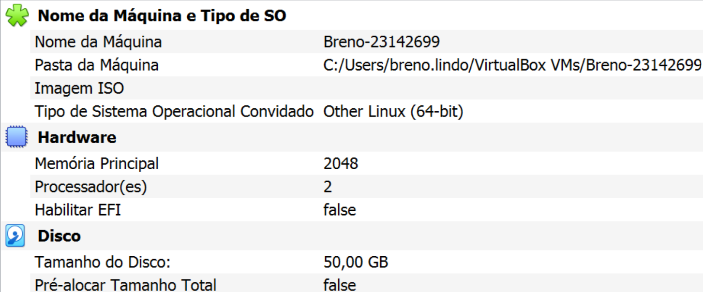
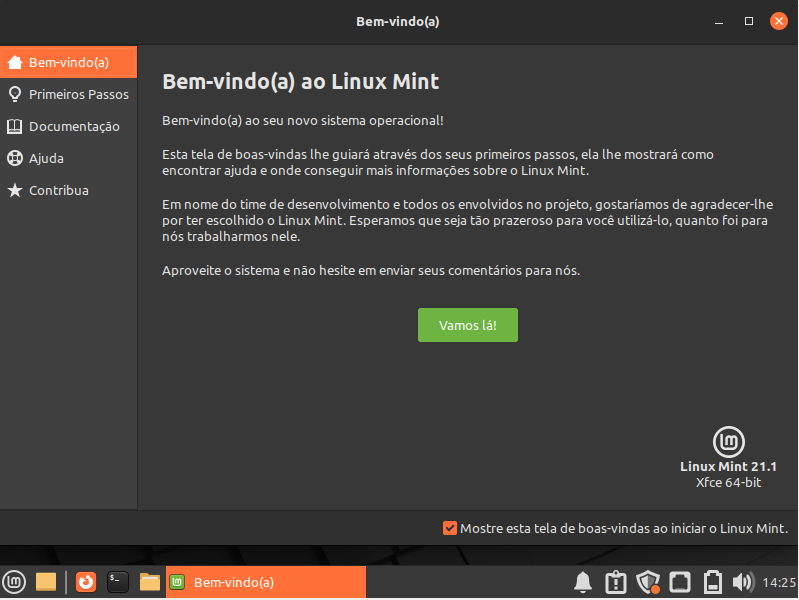

| Nome | Matrícula |
|---|---|
| Breno Salomão Silva | 23142699 |
| Luma Isadora Tomazini Cardoso | 23142742 |
| Igor Plath Martins | 23142708 |
| Lucas Hideki Miyazaki | 23142740 |
| Yasmim Cassez Dias Guimarães | 23142767 |
Informações sobre o Linux Mint
O Linux Mint é uma distribuição Linux baseada no Ubuntu. Foi criada em 2006 por Clement Lefebvre e tem como objetivo oferecer uma experiência de desktop fácil de usar e elegante para os usuários.
O Linux Mint foi criado para resolver o problema de muitos usuários do Ubuntu que achavam a interface Unity muito diferente do que estavam acostumados. O Mint oferece um ambiente de desktop mais tradicional, semelhante ao Windows, tornando a transição para o Linux mais fácil para muitos usuários.
Última versão lançada
Linux Mint 20.3 "Una" - 5 de agosto de 2022
Versão do kernel instalado

Ambiente desktop

Versão da distribuição instalada

Galeria de imagens



Download
Para baixar a imagem do Linux Mint, acesse o site oficial.